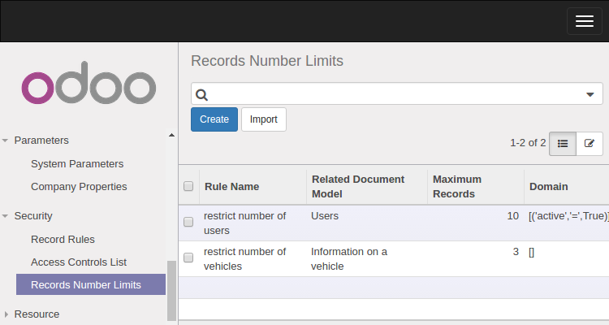

With this module you can limit number of records for any model. For examle, you can restrict number of vehicles in fleet_vehicle, say by three. If users try to create more then three vehicles then exception occurs. This module uses base.action.rule to restrict number of records. And also there is new model base.limit.records_number to strore the settings. To do new settings to restrict number of records in any model the user should be a member of ``Control limits on records number`` security group.

Usage
- In debug mode open Settings / Users / Groups
- Find there Limit records number / Control limits on records number group and add your user in the group
- Open Settings / Technical / Security / Records Number Limits menu
- Create new recorod. For exapmle
- Model: Information on a vehicle
- Domain: []
- Maximum Records: 3
- Save the record
- Try to create more than three vehicles from Fleet / Vehicles / Vehicles. When you try to create more than three vehicles then you see an exception message. The system doesn't allow you create more than three records.